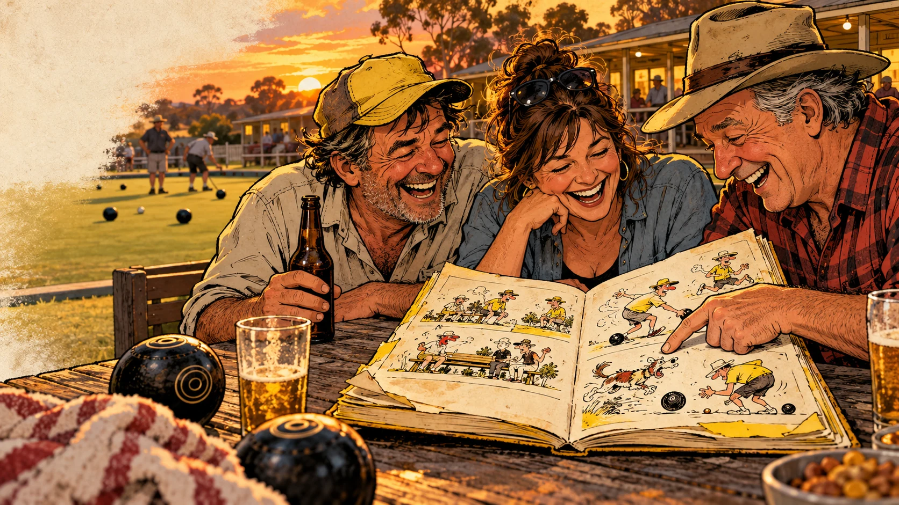

ROUGH AS GUTS • GUIDES IN DEVELOPMENTRough as guts
Funny picture guides for the habits that make families, mates and co-workers say, “How have you survived this long?”
Big pictures. Plain talk. A useful bloody hint.
For someone you love. Who drives you bloody nuts.
Buy it for a mate. Give it to your partner. Leave it on the kitchen bench and let nature take its course. Rough as Guts is being developed around a simple idea: a good laugh can get a useful thought through the door.
The present with a fairly obvious hint
Some gifts say, “I was thinking of you.” This one might say, “I was thinking of your wet towel, your seventh abandoned coffee mug and the way you pack for a weekend like you’re fleeing the country.” The affection stays. The habit gets a proper roasting.
- For family members whose contribution to the washing-up is a weather report.
- For mates who treat preparation as a personal insult.
- For co-workers with a PhD in making a five-minute job take all afternoon.
- For yourself, when the picture looks uncomfortably familiar.
A guide with someone’s name on it
A whole crew of rough edges
Men’s and women’s editions are in development, alongside Young Crew material and workplace ideas. Different people, different situations, plenty of room for everyone to recognise themselves. The joke can follow a character, a couple, a household or an entire camp.
- Men: borrowed tools, five-minute repairs, mystery leftovers and sideline experts.
- Women: handbag archaeology, epic voice notes, op-shop rescues and feral departures.
- Young Crew: growing independence with humour and practical little wins.
- Worksites: shared facilities, camp life and visual support for reviewed task material.
Five new directions. All in development.
The original mine-and-camp material is a starting point. These proposed topics take the same humour into the rest of life.
- Dating and getting along: listening, manners, boundaries and reading the room.
- Exercise: starting sensibly, learning the movement and showing up again.
- Cooking, cleaning and hygiene: feeding yourself and leaving somewhere fit for other humans.
- Parenting: being present, sharing the work and remembering the actual child.
- Travel: packing, planning and behaving like a decent visitor.
One good idea can go a long way
A strong gag could become a book page, poster, small card, short animation or newsletter feature. The useful bit needs to survive each format: a recognisable situation, a clear action and a joke that lands.
- A picture you understand at a glance.
- A caption worth reading aloud.
- A useful point you can remember tomorrow.
- Enough warmth that you might give it to someone you actually like.
Have a rummage
The original 45-slide deck is the source archive. The Systems page shows how an observation can become a clearer, funnier illustrated idea. New editions and formats are in development; this site is a place to explore the work as it takes shape.
A taste of the rough stuff
New picture concepts in development. A familiar habit, a visual joke and a useful little nudge.
01The Museum of Unwashed Mugs
Every room has a different exhibit. Several appear to be developing their own ecosystem.
The dishwasher has capacity. Your bedside table has tenure.
Picture idea: A mock museum tour through a normal house, with abandoned mugs displayed under tiny spotlights and an unimpressed housemate holding a washing-up brush.
Concept in developmentWeekend Away. Expedition Equipment.
Three bags, two backup jackets and no toothbrush.
Excellent. You’re prepared for everything except being there.
Picture idea: Two adults beside an overpacked car; camping gear towers above a small, conspicuously empty toiletries bag.
Concept in developmentThe Five-Minute Job
It began with a loose handle. The whole room is now in pieces.
The first tool you needed was a pause.
Picture idea: A DIY enthusiast surveys an absurd spread of dismantled household objects while a mate holds a single replacement screw.
Concept in developmentWhat else could it become?
Picture books, posters, cartoons, skits, stickers, animation, club mascots and a few ideas best discussed near a shed.
Explore the product pipelineFrom Daz’s original pile
Original draft examples. Open the source record for readable text and source notes.
See all 45 slides